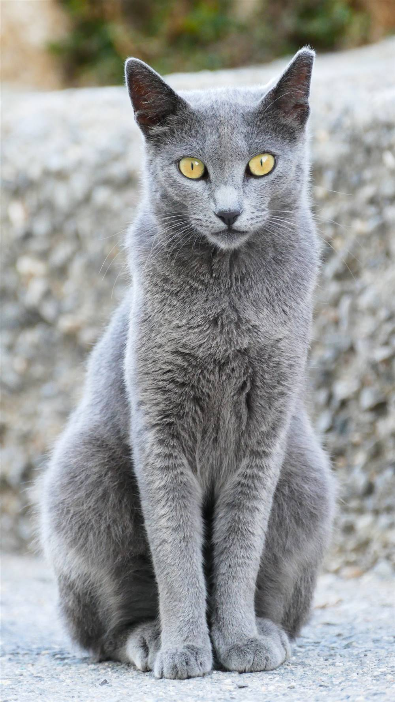

Azul Ruso
El gato azul ruso es sin duda uno de los felinos más populares y hermosos. Si estás pensando en adoptar a un gato de esta raza será conveniente que te informes antes acerca de su carácter, del cuidado del pelo o de las características que posee.
🌏 Orígen: Asia y Rusia.
🐈 Tamaño: Mediano.
🪮 Tipo de pelo: Corto.